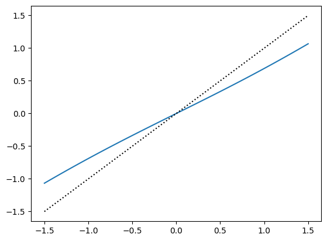
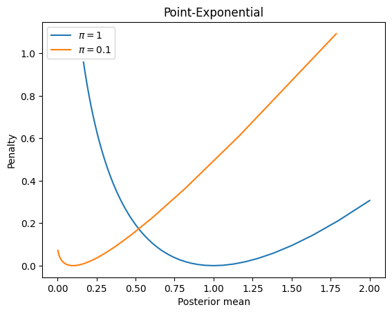

import jax
import jax.numpy as jnp
import numpy as np
import matplotlib.pyplot as plt
from functools import partial
from jax.scipy.interpolate import RegularGridInterpolatorA fixed point iteration
def gaussian_mgf(eta, sigma=1):
return jnp.exp((sigma**2 * eta**2)/2)
def exponential_mgf(eta, rate=1):
return (rate / (rate - eta))
def laplace_mgf(eta, scale=1):
return (1 / (1 - (scale * eta)**2))
def make_cdf(mgf, vmap=True):
def cdf(eta):
return jnp.log(mgf(eta))
cdf_prime = jax.grad(cdf)
if vmap:
return jax.jit(jax.vmap(cdf)), jax.jit(jax.vmap(cdf_prime))
else:
return jax.jit(cdf), jax.jit(cdf_prime)
def make_point_mgf(mgf, pi):
def point_mgf(eta):
return (1 - pi) + pi * mgf(eta)
return point_mgf
def make_mixture_mgf(mgfs, pis):
def point_mgf(eta):
mgf_eval = jnp.array([f(eta) for f in mgfs])
return jnp.sum(pis * mgf_eval)
return point_mgf
def make_penalty(kappa):
kappa_prime_inv = invert(jax.grad(kappa))
@jax.jit
@partial(jax.vmap, in_axes=(0))
def rho(theta):
return theta * kappa_prime_inv(theta) - kappa(kappa_prime_inv(theta))
return rho
def point_cdf(eta, sigma=1, pi=0.1):
return pi * jax.grad(gaussian_mgf)(eta) / (1 - pi + pi * gaussian_mgf(eta))\[ \nu_{g, \sigma, t}(\theta) = \kappa^\prime_g((t-\theta)/\sigma^2)) = \theta \]
Notice that \(\nu(t) = 0\) and \(\nu(0) = t\) when \(g\) is a mean zero prior. Since it may alternate, I propose taking a running average of the iterates. I think a strategy like this should converge to a fixed point.
# set up prior
mgf = partial(gaussian_mgf, sigma=1)
kappa, kappa_prime = make_cdf(mgf, vmap=False)
def make_shrinkage_op(kappa_prime):
def shrinkage_op(t, sigma2):
nu = lambda theta: kappa_prime((t - theta)/sigma2)
def scanf(x, it):
nux = nu(x)
xnew = (it-1)/it * x + (1/it) * nu(x)
return xnew, nux
return jax.lax.scan(scanf, t/2, np.arange(2, 100))[0]
return shrinkage_opkappa_prime = lambda x: x
S = jax.jit(jax.vmap(partial(make_shrinkage_op(kappa_prime), sigma2=1)))
z = np.linspace(-10, 10, 100)
plt.plot(z, S(z))
plt.plot(z, z, c='k', linestyle='dotted')#plt.plot(z, kappa_prime(z))
t = 1
sigma2 = 0.5
z = np.linspace(-0.9, 0.9, 100) * sigma2 + t
nu = lambda theta: kappa_prime((t-theta)/sigma2)
plt.plot(z, nu(z))
plt.plot(z, z)S = partial(make_shrinkage_op(kappa_prime), sigma2=1)
S(0.5)Array(0.33633628, dtype=float32)kappa_prime = lambda x: 2*x/(1-x**2)
z = np.linspace(-0.99, 0.99, 100)
#plt.plot(z, kappa_prime(z))
S = jax.jit(jax.vmap(partial(make_shrinkage_op(kappa_prime), sigma2=1)))
plt.plot(z, S(z))
plt.plot(z, z, c='k', linestyle='dotted')
kappa_prime = lambda theta: theta
S = make_shrinkage_operator(kappa_prime)
S(1., 1.)--------------------------------------------------------------------------- TracerBoolConversionError Traceback (most recent call last) Cell In[66], line 3 1 kappa_prime = lambda theta: theta 2 S = make_shrinkage_operator(kappa_prime) ----> 3 S(1., 1.) Cell In[65], line 10, in make_shrinkage_operator.<locals>.shrinkage_op(t, sigma2) 8 def shrinkage_op(t, sigma2): 9 f = lambda theta: (kappa_prime((t - theta)/sigma2) - theta) ---> 10 theta =jax.lax.cond( 11 t >= 0, 12 lambda: Bisection(optimality_fun=f, lower=0.9*t, upper=10*t).run().params, 13 lambda: Bisection(optimality_fun=f, lower=10*t, upper=0.9*t).run().params 14 ) 15 return theta [... skipping hidden 10 frame] Cell In[65], line 12, in make_shrinkage_operator.<locals>.shrinkage_op.<locals>.<lambda>() 8 def shrinkage_op(t, sigma2): 9 f = lambda theta: (kappa_prime((t - theta)/sigma2) - theta) 10 theta =jax.lax.cond( 11 t >= 0, ---> 12 lambda: Bisection(optimality_fun=f, lower=0.9*t, upper=10*t).run().params, 13 lambda: Bisection(optimality_fun=f, lower=10*t, upper=0.9*t).run().params 14 ) 15 return theta File ~/research/self-tuning-penalty/.venv/lib/python3.13/site-packages/jaxopt/_src/bisection.py:169, in Bisection.run(self, init_params, *args, **kwargs) 164 def run(self, 165 init_params: Optional[Any] = None, 166 *args, 167 **kwargs) -> base.OptStep: 168 # We override run in order to set init_params=None by default. --> 169 return super().run(init_params, *args, **kwargs) File ~/research/self-tuning-penalty/.venv/lib/python3.13/site-packages/jaxopt/_src/base.py:358, in IterativeSolver.run(self, init_params, *args, **kwargs) 351 decorator = idf.custom_root( 352 self.optimality_fun, 353 has_aux=True, 354 solve=self.implicit_diff_solve, 355 reference_signature=reference_signature) 356 run = decorator(run) --> 358 return run(init_params, *args, **kwargs) File ~/research/self-tuning-penalty/.venv/lib/python3.13/site-packages/jaxopt/_src/implicit_diff.py:251, in _custom_root.<locals>.wrapped_solver_fun(*args, **kwargs) 249 args, kwargs = _signature_bind(solver_fun_signature, *args, **kwargs) 250 keys, vals = list(kwargs.keys()), list(kwargs.values()) --> 251 return make_custom_vjp_solver_fun(solver_fun, keys)(*args, *vals) [... skipping hidden 11 frame] File ~/research/self-tuning-penalty/.venv/lib/python3.13/site-packages/jaxopt/_src/implicit_diff.py:207, in _custom_root.<locals>.make_custom_vjp_solver_fun.<locals>.solver_fun_flat(*flat_args) 204 @jax.custom_vjp 205 def solver_fun_flat(*flat_args): 206 args, kwargs = _extract_kwargs(kwarg_keys, flat_args) --> 207 return solver_fun(*args, **kwargs) File ~/research/self-tuning-penalty/.venv/lib/python3.13/site-packages/jaxopt/_src/base.py:300, in IterativeSolver._run(self, init_params, *args, **kwargs) 296 def _run(self, 297 init_params: Any, 298 *args, 299 **kwargs) -> OptStep: --> 300 state = self.init_state(init_params, *args, **kwargs) 302 # We unroll the very first iteration. This allows `init_val` and `body_fun` 303 # below to have the same output type, which is a requirement of 304 # lax.while_loop and lax.scan. (...) 315 # of a `lax.cond` for now in order to avoid staging the initial 316 # update and the run loop. They might not be staging compatible. 318 zero_step = self._make_zero_step(init_params, state) File ~/research/self-tuning-penalty/.venv/lib/python3.13/site-packages/jaxopt/_src/bisection.py:105, in Bisection.init_state(***failed resolving arguments***) 99 sign = jnp.where((lower_value < 0) & (upper_value >= 0), 100 1, 101 jnp.where((lower_value > 0) & (upper_value <= 0), -1, 0)) 103 if self.check_bracket: 104 # Not jittable... --> 105 if sign == 0: 106 raise ValueError("The root is not contained in [lower, upper]. " 107 "`optimality_fun` evaluated at lower and upper should " 108 "have opposite signs.") 110 return BisectionState(iter_num=jnp.asarray(0), 111 value=jnp.asarray(jnp.inf), 112 error=jnp.asarray(jnp.inf), 113 low=lower, high=upper, 114 sign=jnp.asarray(sign), 115 num_fun_eval=jnp.array(2, base.NUM_EVAL_DTYPE)) [... skipping hidden 1 frame] File ~/research/self-tuning-penalty/.venv/lib/python3.13/site-packages/jax/_src/core.py:1604, in concretization_function_error.<locals>.error(self, arg) 1603 def error(self, arg): -> 1604 raise TracerBoolConversionError(arg) TracerBoolConversionError: Attempted boolean conversion of traced array with shape bool[]. The error occurred while tracing the function solver_fun_flat at /Users/ktayeb/research/self-tuning-penalty/.venv/lib/python3.13/site-packages/jaxopt/_src/implicit_diff.py:204 for custom_vjp fun. This value became a tracer due to JAX operations on these lines: operation a:f32[] = convert_element_type[new_dtype=float32 weak_type=False] b from line /Users/ktayeb/research/self-tuning-penalty/.venv/lib/python3.13/site-packages/jaxopt/_src/bisection.py:90:12 (Bisection.init_state) operation a:f32[] = convert_element_type[new_dtype=float32 weak_type=False] b from line /Users/ktayeb/research/self-tuning-penalty/.venv/lib/python3.13/site-packages/jaxopt/_src/bisection.py:91:12 (Bisection.init_state) operation a:f32[] = convert_element_type[new_dtype=float32 weak_type=False] b from line /var/folders/0q/xlv6fxx51c17jf27j1ws0wx40000gn/T/ipykernel_77668/229207572.py:9:40 (make_shrinkage_operator.<locals>.shrinkage_op.<locals>.<lambda>) operation a:f32[] = convert_element_type[new_dtype=float32 weak_type=False] b from line /var/folders/0q/xlv6fxx51c17jf27j1ws0wx40000gn/T/ipykernel_77668/229207572.py:9:39 (make_shrinkage_operator.<locals>.shrinkage_op.<locals>.<lambda>) operation a:f32[] = convert_element_type[new_dtype=float32 weak_type=False] b from line /var/folders/0q/xlv6fxx51c17jf27j1ws0wx40000gn/T/ipykernel_77668/229207572.py:9:40 (make_shrinkage_operator.<locals>.shrinkage_op.<locals>.<lambda>) (Additional originating lines are not shown.) See https://jax.readthedocs.io/en/latest/errors.html#jax.errors.TracerBoolConversionError
S(2., 1)Array(4.000001, dtype=float32)np.linspace(0, 1, 10)array([0. , 0.11111111, 0.22222222, 0.33333333, 0.44444444,
0.55555556, 0.66666667, 0.77777778, 0.88888889, 1. ])Sv = jax.vmap(S, in_axes=(0, None))
Sv(np.linspace(0, 1, 10), 1.)--------------------------------------------------------------------------- TracerBoolConversionError Traceback (most recent call last) Cell In[55], line 2 1 Sv = jax.vmap(S, in_axes=(0, None)) ----> 2 Sv(np.linspace(0, 1, 10), 1.) [... skipping hidden 7 frame] Cell In[47], line 11, in make_shrinkage_operator.<locals>.shrinkage_op(theta, sigma2) 9 lower, upper = get_range(jnp.array([theta*10, theta * 0.9])) 10 bisec = Bisection(optimality_fun=f, lower=lower, upper=upper) ---> 11 return bisec.run().params File ~/research/self-tuning-penalty/.venv/lib/python3.13/site-packages/jaxopt/_src/bisection.py:169, in Bisection.run(self, init_params, *args, **kwargs) 164 def run(self, 165 init_params: Optional[Any] = None, 166 *args, 167 **kwargs) -> base.OptStep: 168 # We override run in order to set init_params=None by default. --> 169 return super().run(init_params, *args, **kwargs) File ~/research/self-tuning-penalty/.venv/lib/python3.13/site-packages/jaxopt/_src/base.py:358, in IterativeSolver.run(self, init_params, *args, **kwargs) 351 decorator = idf.custom_root( 352 self.optimality_fun, 353 has_aux=True, 354 solve=self.implicit_diff_solve, 355 reference_signature=reference_signature) 356 run = decorator(run) --> 358 return run(init_params, *args, **kwargs) File ~/research/self-tuning-penalty/.venv/lib/python3.13/site-packages/jaxopt/_src/implicit_diff.py:251, in _custom_root.<locals>.wrapped_solver_fun(*args, **kwargs) 249 args, kwargs = _signature_bind(solver_fun_signature, *args, **kwargs) 250 keys, vals = list(kwargs.keys()), list(kwargs.values()) --> 251 return make_custom_vjp_solver_fun(solver_fun, keys)(*args, *vals) [... skipping hidden 12 frame] File ~/research/self-tuning-penalty/.venv/lib/python3.13/site-packages/jaxopt/_src/implicit_diff.py:207, in _custom_root.<locals>.make_custom_vjp_solver_fun.<locals>.solver_fun_flat(*flat_args) 204 @jax.custom_vjp 205 def solver_fun_flat(*flat_args): 206 args, kwargs = _extract_kwargs(kwarg_keys, flat_args) --> 207 return solver_fun(*args, **kwargs) File ~/research/self-tuning-penalty/.venv/lib/python3.13/site-packages/jaxopt/_src/base.py:300, in IterativeSolver._run(self, init_params, *args, **kwargs) 296 def _run(self, 297 init_params: Any, 298 *args, 299 **kwargs) -> OptStep: --> 300 state = self.init_state(init_params, *args, **kwargs) 302 # We unroll the very first iteration. This allows `init_val` and `body_fun` 303 # below to have the same output type, which is a requirement of 304 # lax.while_loop and lax.scan. (...) 315 # of a `lax.cond` for now in order to avoid staging the initial 316 # update and the run loop. They might not be staging compatible. 318 zero_step = self._make_zero_step(init_params, state) File ~/research/self-tuning-penalty/.venv/lib/python3.13/site-packages/jaxopt/_src/bisection.py:105, in Bisection.init_state(***failed resolving arguments***) 99 sign = jnp.where((lower_value < 0) & (upper_value >= 0), 100 1, 101 jnp.where((lower_value > 0) & (upper_value <= 0), -1, 0)) 103 if self.check_bracket: 104 # Not jittable... --> 105 if sign == 0: 106 raise ValueError("The root is not contained in [lower, upper]. " 107 "`optimality_fun` evaluated at lower and upper should " 108 "have opposite signs.") 110 return BisectionState(iter_num=jnp.asarray(0), 111 value=jnp.asarray(jnp.inf), 112 error=jnp.asarray(jnp.inf), 113 low=lower, high=upper, 114 sign=jnp.asarray(sign), 115 num_fun_eval=jnp.array(2, base.NUM_EVAL_DTYPE)) [... skipping hidden 1 frame] File ~/research/self-tuning-penalty/.venv/lib/python3.13/site-packages/jax/_src/core.py:1604, in concretization_function_error.<locals>.error(self, arg) 1603 def error(self, arg): -> 1604 raise TracerBoolConversionError(arg) TracerBoolConversionError: Attempted boolean conversion of traced array with shape bool[]. This BatchTracer with object id 4769498704 was created on line: /Users/ktayeb/research/self-tuning-penalty/.venv/lib/python3.13/site-packages/jaxopt/_src/bisection.py:105:9 (Bisection.init_state) See https://jax.readthedocs.io/en/latest/errors.html#jax.errors.TracerBoolConversionError
bisec = Bisection(optimality_fun=f, lower=-1, upper=2)
print(bisec.run().params)--------------------------------------------------------------------------- IndexError Traceback (most recent call last) File ~/research/self-tuning-penalty/.venv/lib/python3.13/site-packages/jax/_src/api.py:1063, in _mapped_axis_size.<locals>._get_axis_size(name, shape, axis) 1062 try: -> 1063 return shape[axis] 1064 except (IndexError, TypeError) as e: IndexError: tuple index out of range The above exception was the direct cause of the following exception: ValueError Traceback (most recent call last) Cell In[17], line 2 1 bisec = Bisection(optimality_fun=f, lower=-1, upper=2) ----> 2 print(bisec.run().params) File ~/research/self-tuning-penalty/.venv/lib/python3.13/site-packages/jaxopt/_src/bisection.py:169, in Bisection.run(self, init_params, *args, **kwargs) 164 def run(self, 165 init_params: Optional[Any] = None, 166 *args, 167 **kwargs) -> base.OptStep: 168 # We override run in order to set init_params=None by default. --> 169 return super().run(init_params, *args, **kwargs) File ~/research/self-tuning-penalty/.venv/lib/python3.13/site-packages/jaxopt/_src/base.py:358, in IterativeSolver.run(self, init_params, *args, **kwargs) 351 decorator = idf.custom_root( 352 self.optimality_fun, 353 has_aux=True, 354 solve=self.implicit_diff_solve, 355 reference_signature=reference_signature) 356 run = decorator(run) --> 358 return run(init_params, *args, **kwargs) File ~/research/self-tuning-penalty/.venv/lib/python3.13/site-packages/jaxopt/_src/implicit_diff.py:251, in _custom_root.<locals>.wrapped_solver_fun(*args, **kwargs) 249 args, kwargs = _signature_bind(solver_fun_signature, *args, **kwargs) 250 keys, vals = list(kwargs.keys()), list(kwargs.values()) --> 251 return make_custom_vjp_solver_fun(solver_fun, keys)(*args, *vals) [... skipping hidden 9 frame] File ~/research/self-tuning-penalty/.venv/lib/python3.13/site-packages/jaxopt/_src/implicit_diff.py:207, in _custom_root.<locals>.make_custom_vjp_solver_fun.<locals>.solver_fun_flat(*flat_args) 204 @jax.custom_vjp 205 def solver_fun_flat(*flat_args): 206 args, kwargs = _extract_kwargs(kwarg_keys, flat_args) --> 207 return solver_fun(*args, **kwargs) File ~/research/self-tuning-penalty/.venv/lib/python3.13/site-packages/jaxopt/_src/base.py:300, in IterativeSolver._run(self, init_params, *args, **kwargs) 296 def _run(self, 297 init_params: Any, 298 *args, 299 **kwargs) -> OptStep: --> 300 state = self.init_state(init_params, *args, **kwargs) 302 # We unroll the very first iteration. This allows `init_val` and `body_fun` 303 # below to have the same output type, which is a requirement of 304 # lax.while_loop and lax.scan. (...) 315 # of a `lax.cond` for now in order to avoid staging the initial 316 # update and the run loop. They might not be staging compatible. 318 zero_step = self._make_zero_step(init_params, state) File ~/research/self-tuning-penalty/.venv/lib/python3.13/site-packages/jaxopt/_src/bisection.py:93, in Bisection.init_state(***failed resolving arguments***) 90 lower = jnp.asarray(self.lower, float) 91 upper = jnp.asarray(self.upper, float) ---> 93 lower_value = self.optimality_fun(lower, *args, **kwargs) 94 upper_value = self.optimality_fun(upper, *args, **kwargs) 96 # sign = 1: the function is increasing 97 # sign = -1: the function is decreasing 98 # sign = 0: the root is not contained in [lower, upper] Cell In[10], line 4, in <lambda>(t) 1 theta = 1. 2 sigma2 = 1. ----> 4 f = lambda t: (kappa_prime((t - theta)/sigma2) - theta) 5 f(np.array([1., 4.])) [... skipping hidden 19 frame] File ~/research/self-tuning-penalty/.venv/lib/python3.13/site-packages/jax/_src/api.py:1067, in _mapped_axis_size.<locals>._get_axis_size(name, shape, axis) 1065 min_rank = axis + 1 if axis >= 0 else -axis 1066 # TODO(mattjj): better error message here -> 1067 raise ValueError( 1068 f"{name} was requested to map its argument along axis {axis}, " 1069 f"which implies that its rank should be at least {min_rank}, " 1070 f"but is only {len(shape)} (its shape is {shape})") from e ValueError: vmap was requested to map its argument along axis 0, which implies that its rank should be at least 1, but is only 0 (its shape is ())
F(np.arange(10))array([ -2, -2, 4, 22, 58, 118, 208, 334, 502, 718])theta = 1.
sigma2 = 1.
kappa_prime = lambda theta: theta
f = lambda t: (kappa_prime((t - theta)/sigma2) - theta)
bisec = Bisection(optimality_fun=f, lower=1, upper=4)
bisec.run().paramsArray(2.0000076, dtype=float32)from jaxopt import Bisection
f = lambda t: (kappa_prime((t - theta)/sigma2) - theta)[None]
bisec = Bisection(optimality_fun=f, lower=1, upper=4)
bisec.run().--------------------------------------------------------------------------- IndexError Traceback (most recent call last) File ~/research/self-tuning-penalty/.venv/lib/python3.13/site-packages/jax/_src/api.py:1063, in _mapped_axis_size.<locals>._get_axis_size(name, shape, axis) 1062 try: -> 1063 return shape[axis] 1064 except (IndexError, TypeError) as e: IndexError: tuple index out of range The above exception was the direct cause of the following exception: ValueError Traceback (most recent call last) Cell In[109], line 4 2 f = lambda t: (kappa_prime((t - theta)/sigma2) - theta)[None] 3 bisec = Bisection(optimality_fun=f, lower=1, upper=4) ----> 4 bisec.run() File ~/research/self-tuning-penalty/.venv/lib/python3.13/site-packages/jaxopt/_src/bisection.py:169, in Bisection.run(self, init_params, *args, **kwargs) 164 def run(self, 165 init_params: Optional[Any] = None, 166 *args, 167 **kwargs) -> base.OptStep: 168 # We override run in order to set init_params=None by default. --> 169 return super().run(init_params, *args, **kwargs) File ~/research/self-tuning-penalty/.venv/lib/python3.13/site-packages/jaxopt/_src/base.py:358, in IterativeSolver.run(self, init_params, *args, **kwargs) 351 decorator = idf.custom_root( 352 self.optimality_fun, 353 has_aux=True, 354 solve=self.implicit_diff_solve, 355 reference_signature=reference_signature) 356 run = decorator(run) --> 358 return run(init_params, *args, **kwargs) File ~/research/self-tuning-penalty/.venv/lib/python3.13/site-packages/jaxopt/_src/implicit_diff.py:251, in _custom_root.<locals>.wrapped_solver_fun(*args, **kwargs) 249 args, kwargs = _signature_bind(solver_fun_signature, *args, **kwargs) 250 keys, vals = list(kwargs.keys()), list(kwargs.values()) --> 251 return make_custom_vjp_solver_fun(solver_fun, keys)(*args, *vals) [... skipping hidden 9 frame] File ~/research/self-tuning-penalty/.venv/lib/python3.13/site-packages/jaxopt/_src/implicit_diff.py:207, in _custom_root.<locals>.make_custom_vjp_solver_fun.<locals>.solver_fun_flat(*flat_args) 204 @jax.custom_vjp 205 def solver_fun_flat(*flat_args): 206 args, kwargs = _extract_kwargs(kwarg_keys, flat_args) --> 207 return solver_fun(*args, **kwargs) File ~/research/self-tuning-penalty/.venv/lib/python3.13/site-packages/jaxopt/_src/base.py:300, in IterativeSolver._run(self, init_params, *args, **kwargs) 296 def _run(self, 297 init_params: Any, 298 *args, 299 **kwargs) -> OptStep: --> 300 state = self.init_state(init_params, *args, **kwargs) 302 # We unroll the very first iteration. This allows `init_val` and `body_fun` 303 # below to have the same output type, which is a requirement of 304 # lax.while_loop and lax.scan. (...) 315 # of a `lax.cond` for now in order to avoid staging the initial 316 # update and the run loop. They might not be staging compatible. 318 zero_step = self._make_zero_step(init_params, state) File ~/research/self-tuning-penalty/.venv/lib/python3.13/site-packages/jaxopt/_src/bisection.py:93, in Bisection.init_state(***failed resolving arguments***) 90 lower = jnp.asarray(self.lower, float) 91 upper = jnp.asarray(self.upper, float) ---> 93 lower_value = self.optimality_fun(lower, *args, **kwargs) 94 upper_value = self.optimality_fun(upper, *args, **kwargs) 96 # sign = 1: the function is increasing 97 # sign = -1: the function is decreasing 98 # sign = 0: the root is not contained in [lower, upper] Cell In[109], line 2, in <lambda>(t) 1 from jaxopt import Bisection ----> 2 f = lambda t: (kappa_prime((t - theta)/sigma2) - theta)[None] 3 bisec = Bisection(optimality_fun=f, lower=1, upper=4) 4 bisec.run() [... skipping hidden 19 frame] File ~/research/self-tuning-penalty/.venv/lib/python3.13/site-packages/jax/_src/api.py:1067, in _mapped_axis_size.<locals>._get_axis_size(name, shape, axis) 1065 min_rank = axis + 1 if axis >= 0 else -axis 1066 # TODO(mattjj): better error message here -> 1067 raise ValueError( 1068 f"{name} was requested to map its argument along axis {axis}, " 1069 f"which implies that its rank should be at least {min_rank}, " 1070 f"but is only {len(shape)} (its shape is {shape})") from e ValueError: vmap was requested to map its argument along axis 0, which implies that its rank should be at least 1, but is only 0 (its shape is ())
solver = ScipyRootFinding(optimality_fun=f)
solver.run(np.ones(1))--------------------------------------------------------------------------- AttributeError Traceback (most recent call last) Cell In[91], line 2 1 solver = ScipyRootFinding(optimality_fun=f) ----> 2 solver.run(np.ones(1)) File ~/research/self-tuning-penalty/.venv/lib/python3.13/site-packages/jaxopt/_src/implicit_diff.py:251, in _custom_root.<locals>.wrapped_solver_fun(*args, **kwargs) 249 args, kwargs = _signature_bind(solver_fun_signature, *args, **kwargs) 250 keys, vals = list(kwargs.keys()), list(kwargs.values()) --> 251 return make_custom_vjp_solver_fun(solver_fun, keys)(*args, *vals) [... skipping hidden 9 frame] File ~/research/self-tuning-penalty/.venv/lib/python3.13/site-packages/jaxopt/_src/implicit_diff.py:207, in _custom_root.<locals>.make_custom_vjp_solver_fun.<locals>.solver_fun_flat(*flat_args) 204 @jax.custom_vjp 205 def solver_fun_flat(*flat_args): 206 args, kwargs = _extract_kwargs(kwarg_keys, flat_args) --> 207 return solver_fun(*args, **kwargs) File ~/research/self-tuning-penalty/.venv/lib/python3.13/site-packages/jaxopt/_src/scipy_wrappers.py:532, in ScipyRootFinding.run(self, init_params, *args, **kwargs) 527 return jnp_to_onp(value_jnp, self.dtype), jac_jnp_to_onp(jacs_jnp) 529 # Argument `args` is unused but must be not None to ensure that some sanity checks are performed 530 # correctly in Scipy for optimizers that don't use the Jacobian (such as Broyden). 531 # See the related issue: https://github.com/google/jaxopt/issues/290 --> 532 res = osp.optimize.root(scipy_fun, jnp_to_onp(init_params, self.dtype), 533 args=(None,), 534 jac=True, 535 tol=self.tol, 536 method=self.method, 537 options=self.options) 539 params = tree_util.tree_map(jnp.asarray, onp_to_jnp(res.x)) 541 # NOTE: maybe there is a better way to do the following (zramzi) File ~/research/self-tuning-penalty/.venv/lib/python3.13/site-packages/scipy/optimize/_root.py:222, in root(fun, x0, args, method, jac, tol, callback, options) 219 if not isinstance(args, tuple): 220 args = (args,) --> 222 meth = method.lower() 223 if options is None: 224 options = {} AttributeError: 'NoneType' object has no attribute 'lower'
z[np.abs(f(z)).argmin()]np.float64(-0.19919919919919926)plt.plot(z, kappa_prime(z))z = np.linspace(-1, 1, 100) * 2
kappa_prime(z)Array([-2. , -1.9595959 , -1.919192 , -1.8787879 , -1.8383838 ,
-1.7979798 , -1.7575758 , -1.7171717 , -1.6767677 , -1.6363636 ,
-1.5959595 , -1.5555556 , -1.5151515 , -1.4747474 , -1.4343435 ,
-1.3939394 , -1.3535353 , -1.3131313 , -1.2727273 , -1.2323233 ,
-1.1919192 , -1.1515151 , -1.1111112 , -1.0707071 , -1.030303 ,
-0.989899 , -0.94949496, -0.90909094, -0.86868685, -0.82828283,
-0.7878788 , -0.74747473, -0.7070707 , -0.6666667 , -0.6262626 ,
-0.5858586 , -0.54545456, -0.5050505 , -0.46464646, -0.42424244,
-0.3838384 , -0.34343433, -0.3030303 , -0.26262626, -0.22222222,
-0.18181819, -0.14141414, -0.1010101 , -0.06060606, -0.02020202,
0.02020202, 0.06060606, 0.1010101 , 0.14141414, 0.18181819,
0.22222222, 0.26262626, 0.3030303 , 0.34343433, 0.3838384 ,
0.42424244, 0.46464646, 0.5050505 , 0.54545456, 0.5858586 ,
0.6262626 , 0.6666667 , 0.7070707 , 0.74747473, 0.7878788 ,
0.82828283, 0.86868685, 0.90909094, 0.94949496, 0.989899 ,
1.030303 , 1.0707071 , 1.1111112 , 1.1515151 , 1.1919192 ,
1.2323233 , 1.2727273 , 1.3131313 , 1.3535353 , 1.3939394 ,
1.4343435 , 1.4747474 , 1.5151515 , 1.5555556 , 1.5959595 ,
1.6363636 , 1.6767677 , 1.7171717 , 1.7575758 , 1.7979798 ,
1.8383838 , 1.8787879 , 1.919192 , 1.9595959 , 2. ], dtype=float32)#
mgf = partial(gaussian_mgf, sigma=1)
kappa, kappa_prime = make_cdf(mgf)
z = np.linspace(-1, 1, 100) * 2
theta = kappa_prime(z)
penalty = theta * z - kappa(z)
plt.plot(theta, penalty, label=r'$\pi=1$')
#
mgf = partial(gaussian_mgf, sigma=1)
point_mgf = make_point_mgf(mgf, pi=0.1)
kappa, kappa_prime = make_cdf(point_mgf)
z = np.linspace(-1, 1, 100) * 2.5
theta = kappa_prime(z)
penalty = theta * z - kappa(z)
plt.plot(theta, penalty, label=r'$\pi=0.1$')
plt.legend()
plt.title('Point-Normal')
plt.xlabel('Posterior mean')
plt.ylabel('Penalty')Text(0, 0.5, 'Penalty')#
mgf = partial(exponential_mgf, rate=1)
kappa, kappa_prime = make_cdf(mgf)
z = np.linspace(-5, 0.5, 100)
theta = kappa_prime(z)
penalty = theta * z - kappa(z)
plt.plot(theta, penalty, label=r'$\pi=1$')
#
mgf = partial(exponential_mgf, rate=1)
point_mgf = make_point_mgf(mgf, pi=0.1)
kappa, kappa_prime = make_cdf(point_mgf)
z = np.linspace(-5, 0.8, 100)
theta = kappa_prime(z)
penalty = theta * z - kappa(z)
plt.plot(theta, penalty, label=r'$\pi=0.1$')
plt.legend()
plt.title('Point-Exponential')
plt.xlabel('Posterior mean')
plt.ylabel('Penalty')Text(0, 0.5, 'Penalty')
z = np.arcsin(np.linspace(0, np.pi, 1000))
#
mgf = partial(laplace_mgf, scale=1)
kappa, kappa_prime = make_cdf(mgf)
theta = kappa_prime(z)
penalty = theta * z - kappa(z)
plt.plot(theta, penalty, label=r'$\pi=1$')
#
mgf = partial(laplace_mgf, scale=1)
point_mgf = make_point_mgf(mgf, pi=0.1)
kappa, kappa_prime = make_cdf(point_mgf)
theta = kappa_prime(z)
penalty = theta * z - kappa(z)
mgf = partial(laplace_mgf, scale=1)
point_mgf = make_point_mgf(mgf, pi=0.01)
kappa, kappa_prime = make_cdf(point_mgf)
theta = kappa_prime(z)
penalty = theta * z - kappa(z)
plt.plot(theta, penalty, label=r'$\pi=0.01$')
mgf = partial(laplace_mgf, scale=1)
point_mgf = make_point_mgf(mgf, pi=0.001)
kappa, kappa_prime = make_cdf(point_mgf)
theta = kappa_prime(z)
penalty = theta * z - kappa(z)
plt.plot(theta, penalty, label=r'$\pi=0.001$')
plt.legend()
plt.title('Point-Laplace')
plt.xlabel('Posterior mean')
plt.ylabel('Penalty')/var/folders/0q/xlv6fxx51c17jf27j1ws0wx40000gn/T/ipykernel_63174/650912464.py:1: RuntimeWarning: invalid value encountered in arcsin
z = np.arcsin(np.linspace(0, np.pi, 1000))Text(0, 0.5, 'Penalty')z = np.cos(np.linspace(0, np.pi, 1000))
z = z[20:-20]
#
mgf = partial(laplace_mgf, scale=1)
kappa, kappa_prime = make_cdf(mgf)
theta = kappa_prime(z)
penalty = theta * z - kappa(z)
plt.plot(z, theta, label=r'$\pi=1$')
#
mgf = partial(laplace_mgf, scale=1)
point_mgf = make_point_mgf(mgf, pi=0.1)
kappa, kappa_prime = make_cdf(point_mgf)
theta = kappa_prime(z)
penalty = theta * z - kappa(z)
mgf = partial(laplace_mgf, scale=1)
point_mgf = make_point_mgf(mgf, pi=0.01)
kappa, kappa_prime = make_cdf(point_mgf)
theta = kappa_prime(z)
penalty = theta * z - kappa(z)
plt.plot(z, theta, label=r'$\pi=0.01$')
mgf = partial(laplace_mgf, scale=1)
point_mgf = make_point_mgf(mgf, pi=0.001)
kappa, kappa_prime = make_cdf(point_mgf)
theta = kappa_prime(z)
penalty = theta * z - kappa(z)
plt.plot(z, theta, label=r'$\pi=0.001$')
plt.legend()
plt.title('Point-Laplace')
plt.xlabel('Posterior mean')
plt.ylabel('Penalty')Text(0, 0.5, 'Penalty')zarray([ 1. , 0.99999506, 0.99998022, 0.9999555 , 0.99992089,
0.99987639, 0.999822 , 0.99975772, 0.99968356, 0.99959951,
0.99950557, 0.99940175, 0.99928805, 0.99916446, 0.999031 ,
0.99888765, 0.99873443, 0.99857133, 0.99839835, 0.9982155 ,
0.99802278, 0.99782019, 0.99760773, 0.9973854 , 0.99715321,
0.99691116, 0.99665925, 0.99639749, 0.99612587, 0.9958444 ,
0.99555308, 0.99525192, 0.99494091, 0.99462007, 0.99428939,
0.99394887, 0.99359853, 0.99323836, 0.99286837, 0.99248855,
0.99209893, 0.99169949, 0.99129025, 0.9908712 , 0.99044235,
0.99000371, 0.98955528, 0.98909706, 0.98862906, 0.98815128,
0.98766373, 0.98716641, 0.98665934, 0.9861425 , 0.98561591,
0.98507957, 0.9845335 , 0.98397768, 0.98341214, 0.98283687,
0.98225188, 0.98165717, 0.98105276, 0.98043865, 0.97981484,
0.97918134, 0.97853816, 0.9778853 , 0.97722277, 0.97655057,
0.97586872, 0.97517722, 0.97447607, 0.97376528, 0.97304487,
0.97231483, 0.97157518, 0.97082592, 0.97006706, 0.96929861,
0.96852057, 0.96773295, 0.96693576, 0.96612901, 0.9653127 ,
0.96448685, 0.96365146, 0.96280654, 0.9619521 , 0.96108814,
0.96021469, 0.95933173, 0.95843929, 0.95753737, 0.95662598,
0.95570513, 0.95477483, 0.95383508, 0.95288591, 0.95192731,
0.95095929, 0.94998187, 0.94899506, 0.94799886, 0.94699329,
0.94597835, 0.94495406, 0.94392042, 0.94287745, 0.94182515,
0.94076354, 0.93969262, 0.93861241, 0.93752292, 0.93642416,
0.93531614, 0.93419886, 0.93307235, 0.93193662, 0.93079166,
0.9296375 , 0.92847415, 0.92730161, 0.92611991, 0.92492904,
0.92372903, 0.92251988, 0.92130162, 0.92007423, 0.91883775,
0.91759219, 0.91633755, 0.91507385, 0.91380109, 0.9125193 ,
0.91122849, 0.90992867, 0.90861984, 0.90730203, 0.90597525,
0.90463951, 0.90329482, 0.9019412 , 0.90057866, 0.89920721,
0.89782688, 0.89643766, 0.89503957, 0.89363264, 0.89221687,
0.89079227, 0.88935887, 0.88791667, 0.88646569, 0.88500594,
0.88353744, 0.8820602 , 0.88057424, 0.87907957, 0.87757621,
0.87606417, 0.87454347, 0.87301411, 0.87147613, 0.86992952,
0.86837431, 0.86681052, 0.86523815, 0.86365722, 0.86206776,
0.86046977, 0.85886327, 0.85724827, 0.8556248 , 0.85399287,
0.85235249, 0.85070368, 0.84904646, 0.84738084, 0.84570685,
0.84402448, 0.84233378, 0.84063474, 0.83892739, 0.83721174,
0.83548781, 0.83375562, 0.83201519, 0.83026652, 0.82850965,
0.82674458, 0.82497134, 0.82318994, 0.82140039, 0.81960273,
0.81779696, 0.8159831 , 0.81416117, 0.81233119, 0.81049318,
0.80864715, 0.80679312, 0.80493112, 0.80306115, 0.80118325,
0.79929742, 0.79740368, 0.79550207, 0.79359258, 0.79167524,
0.78975008, 0.78781711, 0.78587634, 0.7839278 , 0.78197151,
0.78000749, 0.77803575, 0.77605632, 0.77406922, 0.77207446,
0.77007206, 0.76806205, 0.76604444, 0.76401926, 0.76198652,
0.75994625, 0.75789846, 0.75584317, 0.75378041, 0.7517102 ,
0.74963255, 0.74754749, 0.74545504, 0.74335521, 0.74124804,
0.73913353, 0.73701171, 0.7348826 , 0.73274623, 0.73060261,
0.72845177, 0.72629372, 0.72412849, 0.72195609, 0.71977656,
0.71758991, 0.71539616, 0.71319534, 0.71098747, 0.70877256,
0.70655065, 0.70432174, 0.70208588, 0.69984306, 0.69759333,
0.6953367 , 0.69307319, 0.69080283, 0.68852564, 0.68624164,
0.68395085, 0.6816533 , 0.679349 , 0.67703799, 0.67472028,
0.6723959 , 0.67006487, 0.66772722, 0.66538296, 0.66303212,
0.66067472, 0.65831079, 0.65594035, 0.65356343, 0.65118003,
0.6487902 , 0.64639396, 0.64399132, 0.64158231, 0.63916696,
0.63674529, 0.63431732, 0.63188307, 0.62944258, 0.62699586,
0.62454294, 0.62208385, 0.6196186 , 0.61714723, 0.61466975,
0.6121862 , 0.60969659, 0.60720095, 0.60469931, 0.60219168,
0.5996781 , 0.59715859, 0.59463318, 0.59210188, 0.58956473,
0.58702175, 0.58447296, 0.58191839, 0.57935807, 0.57679202,
0.57422026, 0.57164283, 0.56905974, 0.56647103, 0.56387671,
0.56127682, 0.55867137, 0.5560604 , 0.55344393, 0.55082199,
0.5481946 , 0.54556179, 0.54292359, 0.54028001, 0.5376311 ,
0.53497686, 0.53231734, 0.52965255, 0.52698252, 0.52430728,
0.52162686, 0.51894128, 0.51625056, 0.51355474, 0.51085385,
0.5081479 , 0.50543692, 0.50272095, 0.5 , 0.49727411,
0.4945433 , 0.4918076 , 0.48906704, 0.48632164, 0.48357143,
0.48081644, 0.4780567 , 0.47529222, 0.47252305, 0.4697492 ,
0.46697071, 0.4641876 , 0.4613999 , 0.45860764, 0.45581084,
0.45300953, 0.45020374, 0.44739351, 0.44457884, 0.44175978,
0.43893635, 0.43610858, 0.4332765 , 0.43044014, 0.42759951,
0.42475466, 0.42190561, 0.41905238, 0.41619501, 0.41333353,
0.41046795, 0.40759832, 0.40472466, 0.40184699, 0.39896535,
0.39607977, 0.39319026, 0.39029687, 0.38739962, 0.38449854,
0.38159366, 0.378685 , 0.3757726 , 0.37285648, 0.36993667,
0.36701321, 0.36408611, 0.36115542, 0.35822115, 0.35528334,
0.35234202, 0.34939721, 0.34644895, 0.34349726, 0.34054218,
0.33758372, 0.33462193, 0.33165683, 0.32868845, 0.32571682,
0.32274197, 0.31976392, 0.31678272, 0.31379838, 0.31081094,
0.30782042, 0.30482686, 0.30183029, 0.29883073, 0.29582821,
0.29282277, 0.28981444, 0.28680323, 0.28378919, 0.28077235,
0.27775273, 0.27473036, 0.27170527, 0.2686775 , 0.26564707,
0.26261401, 0.25957836, 0.25654014, 0.25349938, 0.25045612,
0.24741038, 0.24436219, 0.24131158, 0.23825859, 0.23520324,
0.23214557, 0.2290856 , 0.22602337, 0.2229589 , 0.21989222,
0.21682337, 0.21375238, 0.21067927, 0.20760408, 0.20452683,
0.20144757, 0.19836631, 0.19528309, 0.19219794, 0.18911088,
0.18602196, 0.1829312 , 0.17983863, 0.17674428, 0.17364818,
0.17055036, 0.16745086, 0.1643497 , 0.16124692, 0.15814254,
0.1550366 , 0.15192912, 0.14882015, 0.1457097 , 0.14259781,
0.13948451, 0.13636983, 0.1332538 , 0.13013645, 0.12701782,
0.12389793, 0.12077682, 0.11765451, 0.11453103, 0.11140643,
0.10828072, 0.10515394, 0.10202613, 0.0988973 , 0.0957675 ,
0.09263674, 0.08950508, 0.08637252, 0.08323912, 0.08010489,
0.07696986, 0.07383408, 0.07069757, 0.06756035, 0.06442247,
0.06128395, 0.05814483, 0.05500513, 0.05186489, 0.04872413,
0.04558289, 0.0424412 , 0.03929909, 0.0361566 , 0.03301374,
0.02987056, 0.02672708, 0.02358334, 0.02043937, 0.01729519,
0.01415085, 0.01100636, 0.00786176, 0.00471709, 0.00157237,
-0.00157237, -0.00471709, -0.00786176, -0.01100636, -0.01415085,
-0.01729519, -0.02043937, -0.02358334, -0.02672708, -0.02987056,
-0.03301374, -0.0361566 , -0.03929909, -0.0424412 , -0.04558289,
-0.04872413, -0.05186489, -0.05500513, -0.05814483, -0.06128395,
-0.06442247, -0.06756035, -0.07069757, -0.07383408, -0.07696986,
-0.08010489, -0.08323912, -0.08637252, -0.08950508, -0.09263674,
-0.0957675 , -0.0988973 , -0.10202613, -0.10515394, -0.10828072,
-0.11140643, -0.11453103, -0.11765451, -0.12077682, -0.12389793,
-0.12701782, -0.13013645, -0.1332538 , -0.13636983, -0.13948451,
-0.14259781, -0.1457097 , -0.14882015, -0.15192912, -0.1550366 ,
-0.15814254, -0.16124692, -0.1643497 , -0.16745086, -0.17055036,
-0.17364818, -0.17674428, -0.17983863, -0.1829312 , -0.18602196,
-0.18911088, -0.19219794, -0.19528309, -0.19836631, -0.20144757,
-0.20452683, -0.20760408, -0.21067927, -0.21375238, -0.21682337,
-0.21989222, -0.2229589 , -0.22602337, -0.2290856 , -0.23214557,
-0.23520324, -0.23825859, -0.24131158, -0.24436219, -0.24741038,
-0.25045612, -0.25349938, -0.25654014, -0.25957836, -0.26261401,
-0.26564707, -0.2686775 , -0.27170527, -0.27473036, -0.27775273,
-0.28077235, -0.28378919, -0.28680323, -0.28981444, -0.29282277,
-0.29582821, -0.29883073, -0.30183029, -0.30482686, -0.30782042,
-0.31081094, -0.31379838, -0.31678272, -0.31976392, -0.32274197,
-0.32571682, -0.32868845, -0.33165683, -0.33462193, -0.33758372,
-0.34054218, -0.34349726, -0.34644895, -0.34939721, -0.35234202,
-0.35528334, -0.35822115, -0.36115542, -0.36408611, -0.36701321,
-0.36993667, -0.37285648, -0.3757726 , -0.378685 , -0.38159366,
-0.38449854, -0.38739962, -0.39029687, -0.39319026, -0.39607977,
-0.39896535, -0.40184699, -0.40472466, -0.40759832, -0.41046795,
-0.41333353, -0.41619501, -0.41905238, -0.42190561, -0.42475466,
-0.42759951, -0.43044014, -0.4332765 , -0.43610858, -0.43893635,
-0.44175978, -0.44457884, -0.44739351, -0.45020374, -0.45300953,
-0.45581084, -0.45860764, -0.4613999 , -0.4641876 , -0.46697071,
-0.4697492 , -0.47252305, -0.47529222, -0.4780567 , -0.48081644,
-0.48357143, -0.48632164, -0.48906704, -0.4918076 , -0.4945433 ,
-0.49727411, -0.5 , -0.50272095, -0.50543692, -0.5081479 ,
-0.51085385, -0.51355474, -0.51625056, -0.51894128, -0.52162686,
-0.52430728, -0.52698252, -0.52965255, -0.53231734, -0.53497686,
-0.5376311 , -0.54028001, -0.54292359, -0.54556179, -0.5481946 ,
-0.55082199, -0.55344393, -0.5560604 , -0.55867137, -0.56127682,
-0.56387671, -0.56647103, -0.56905974, -0.57164283, -0.57422026,
-0.57679202, -0.57935807, -0.58191839, -0.58447296, -0.58702175,
-0.58956473, -0.59210188, -0.59463318, -0.59715859, -0.5996781 ,
-0.60219168, -0.60469931, -0.60720095, -0.60969659, -0.6121862 ,
-0.61466975, -0.61714723, -0.6196186 , -0.62208385, -0.62454294,
-0.62699586, -0.62944258, -0.63188307, -0.63431732, -0.63674529,
-0.63916696, -0.64158231, -0.64399132, -0.64639396, -0.6487902 ,
-0.65118003, -0.65356343, -0.65594035, -0.65831079, -0.66067472,
-0.66303212, -0.66538296, -0.66772722, -0.67006487, -0.6723959 ,
-0.67472028, -0.67703799, -0.679349 , -0.6816533 , -0.68395085,
-0.68624164, -0.68852564, -0.69080283, -0.69307319, -0.6953367 ,
-0.69759333, -0.69984306, -0.70208588, -0.70432174, -0.70655065,
-0.70877256, -0.71098747, -0.71319534, -0.71539616, -0.71758991,
-0.71977656, -0.72195609, -0.72412849, -0.72629372, -0.72845177,
-0.73060261, -0.73274623, -0.7348826 , -0.73701171, -0.73913353,
-0.74124804, -0.74335521, -0.74545504, -0.74754749, -0.74963255,
-0.7517102 , -0.75378041, -0.75584317, -0.75789846, -0.75994625,
-0.76198652, -0.76401926, -0.76604444, -0.76806205, -0.77007206,
-0.77207446, -0.77406922, -0.77605632, -0.77803575, -0.78000749,
-0.78197151, -0.7839278 , -0.78587634, -0.78781711, -0.78975008,
-0.79167524, -0.79359258, -0.79550207, -0.79740368, -0.79929742,
-0.80118325, -0.80306115, -0.80493112, -0.80679312, -0.80864715,
-0.81049318, -0.81233119, -0.81416117, -0.8159831 , -0.81779696,
-0.81960273, -0.82140039, -0.82318994, -0.82497134, -0.82674458,
-0.82850965, -0.83026652, -0.83201519, -0.83375562, -0.83548781,
-0.83721174, -0.83892739, -0.84063474, -0.84233378, -0.84402448,
-0.84570685, -0.84738084, -0.84904646, -0.85070368, -0.85235249,
-0.85399287, -0.8556248 , -0.85724827, -0.85886327, -0.86046977,
-0.86206776, -0.86365722, -0.86523815, -0.86681052, -0.86837431,
-0.86992952, -0.87147613, -0.87301411, -0.87454347, -0.87606417,
-0.87757621, -0.87907957, -0.88057424, -0.8820602 , -0.88353744,
-0.88500594, -0.88646569, -0.88791667, -0.88935887, -0.89079227,
-0.89221687, -0.89363264, -0.89503957, -0.89643766, -0.89782688,
-0.89920721, -0.90057866, -0.9019412 , -0.90329482, -0.90463951,
-0.90597525, -0.90730203, -0.90861984, -0.90992867, -0.91122849,
-0.9125193 , -0.91380109, -0.91507385, -0.91633755, -0.91759219,
-0.91883775, -0.92007423, -0.92130162, -0.92251988, -0.92372903,
-0.92492904, -0.92611991, -0.92730161, -0.92847415, -0.9296375 ,
-0.93079166, -0.93193662, -0.93307235, -0.93419886, -0.93531614,
-0.93642416, -0.93752292, -0.93861241, -0.93969262, -0.94076354,
-0.94182515, -0.94287745, -0.94392042, -0.94495406, -0.94597835,
-0.94699329, -0.94799886, -0.94899506, -0.94998187, -0.95095929,
-0.95192731, -0.95288591, -0.95383508, -0.95477483, -0.95570513,
-0.95662598, -0.95753737, -0.95843929, -0.95933173, -0.96021469,
-0.96108814, -0.9619521 , -0.96280654, -0.96365146, -0.96448685,
-0.9653127 , -0.96612901, -0.96693576, -0.96773295, -0.96852057,
-0.96929861, -0.97006706, -0.97082592, -0.97157518, -0.97231483,
-0.97304487, -0.97376528, -0.97447607, -0.97517722, -0.97586872,
-0.97655057, -0.97722277, -0.9778853 , -0.97853816, -0.97918134,
-0.97981484, -0.98043865, -0.98105276, -0.98165717, -0.98225188,
-0.98283687, -0.98341214, -0.98397768, -0.9845335 , -0.98507957,
-0.98561591, -0.9861425 , -0.98665934, -0.98716641, -0.98766373,
-0.98815128, -0.98862906, -0.98909706, -0.98955528, -0.99000371,
-0.99044235, -0.9908712 , -0.99129025, -0.99169949, -0.99209893,
-0.99248855, -0.99286837, -0.99323836, -0.99359853, -0.99394887,
-0.99428939, -0.99462007, -0.99494091, -0.99525192, -0.99555308,
-0.9958444 , -0.99612587, -0.99639749, -0.99665925, -0.99691116,
-0.99715321, -0.9973854 , -0.99760773, -0.99782019, -0.99802278,
-0.9982155 , -0.99839835, -0.99857133, -0.99873443, -0.99888765,
-0.999031 , -0.99916446, -0.99928805, -0.99940175, -0.99950557,
-0.99959951, -0.99968356, -0.99975772, -0.999822 , -0.99987639,
-0.99992089, -0.9999555 , -0.99998022, -0.99999506, -1. ])